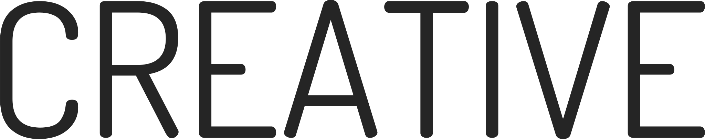
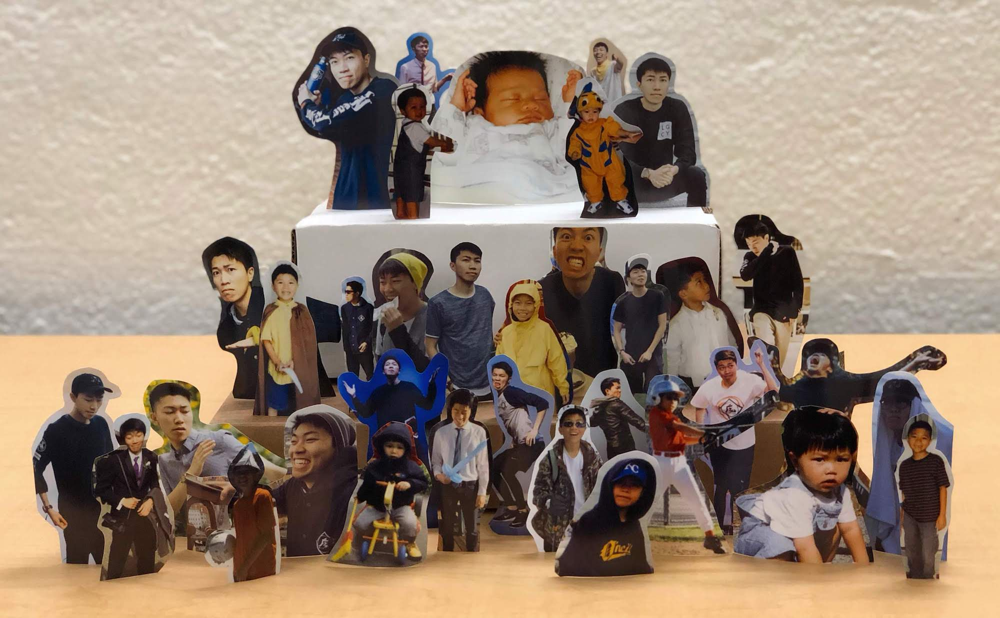

Splashes of fuzziness in my tech-focused life

1 Second Every Day
2017-Present
An attempt to capture and reflect on some of life's smaller moments through daily videography.

Digital Art
Spring 2018 | Stanford, CA
A sample of my work from Stanford's ARTSTUDI 179 course.